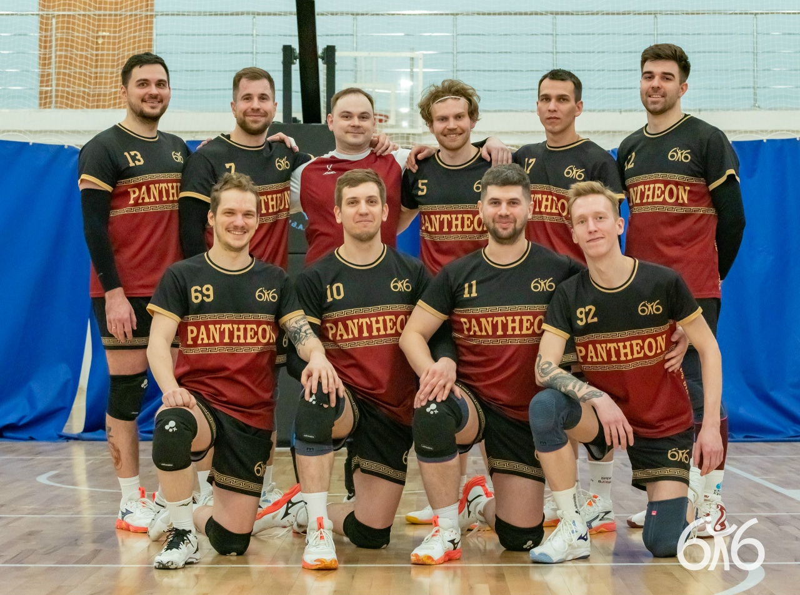
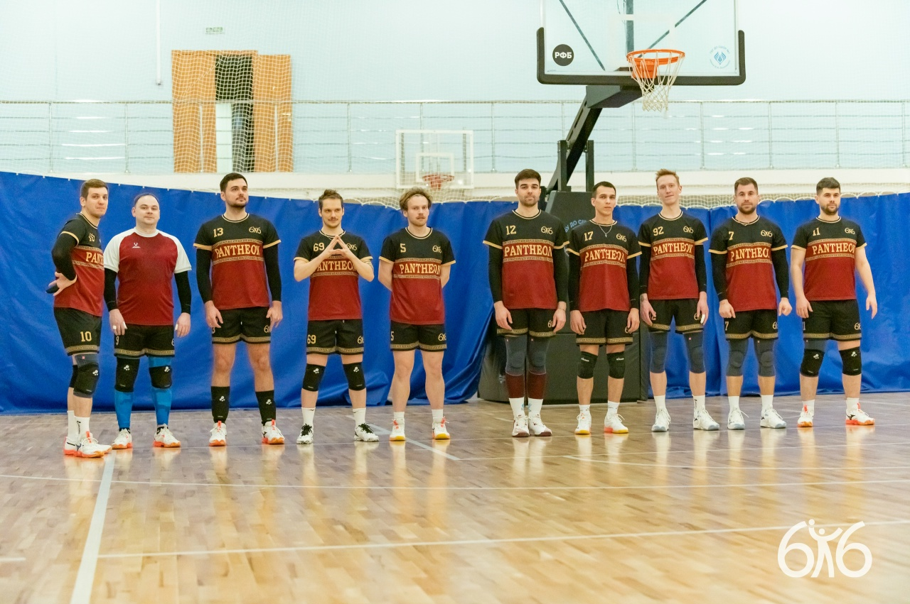
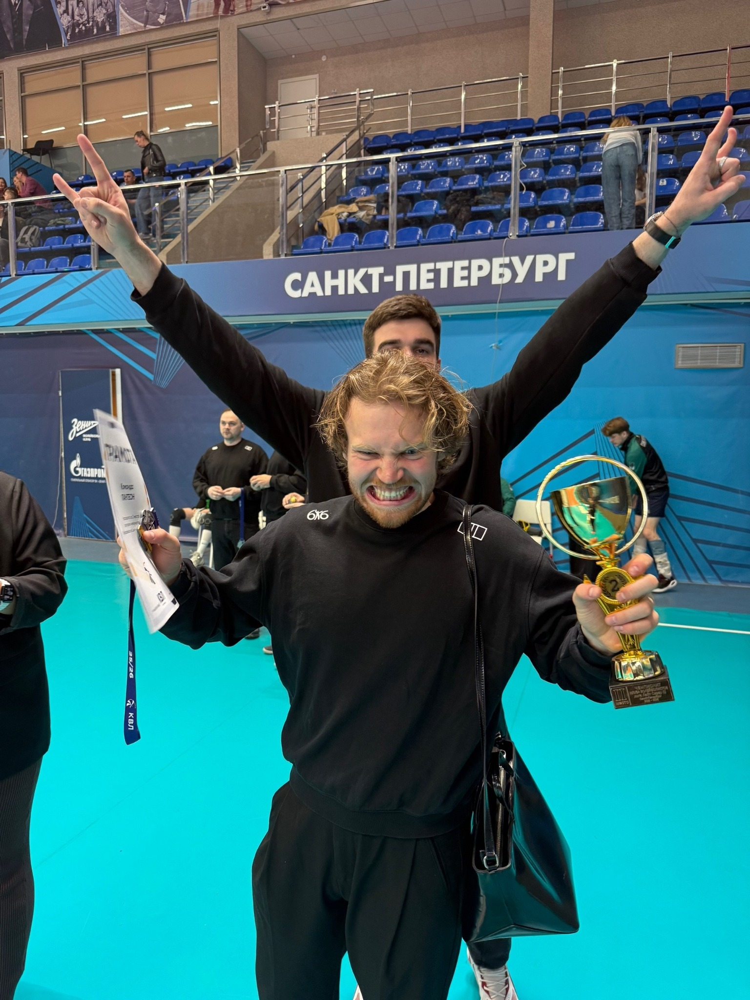
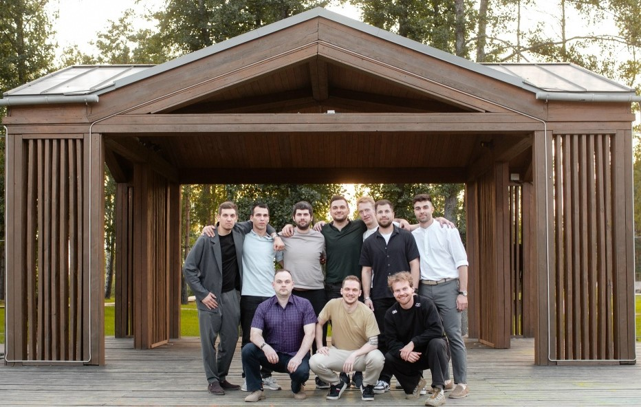
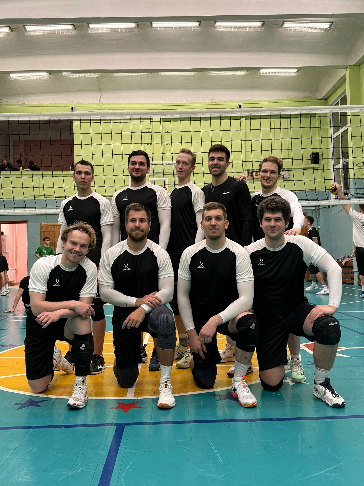
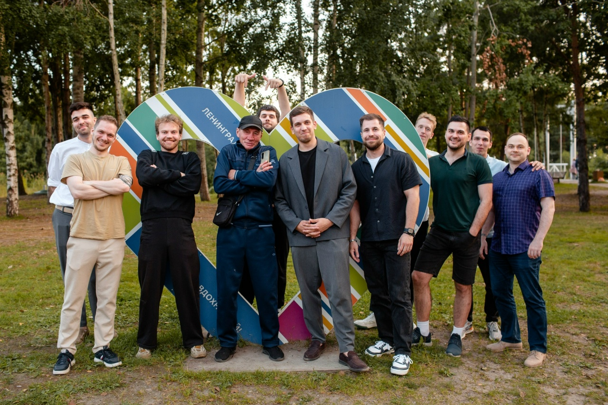
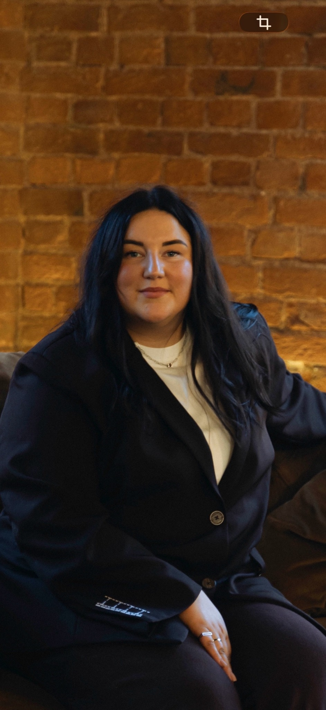
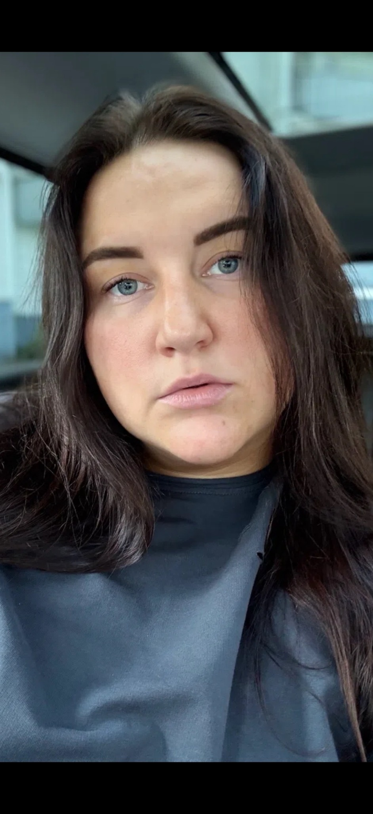

Сезон 2025 / 26
Кубок наш.
Пьедестал наш.
Первое место в Кубке Лайт А и второе место в Лайт‑Север 1. Сезон, в котором команда подтвердила характер результатом.

Стоим друг за друга.
Играем за победу.
Новый сезон

Сезон 2025 / 26
Первое место в Кубке Лайт А и второе место в Лайт‑Север 1. Сезон, в котором команда подтвердила характер результатом.

Архив сезона
Игроки PANTHEON
Десять разных характеров.
Одна система на площадке.
PANTHEON вне площадки
Мы встречаемся не только у сетки.
Команда — это всё, что происходит между играми.





Тренер команды
Командная работа, дисциплина и готовность сделать ещё один шаг — за себя и за партнёра.